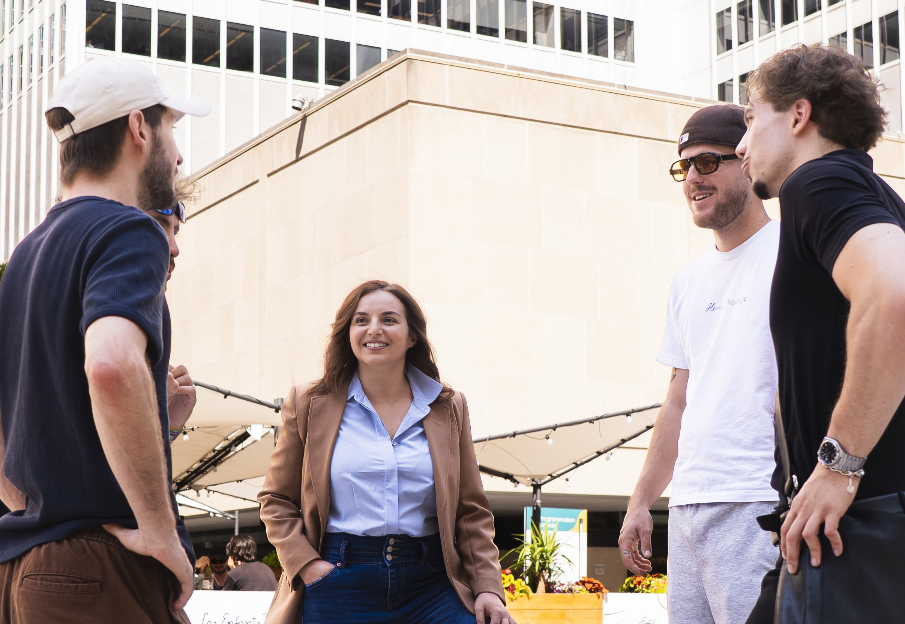
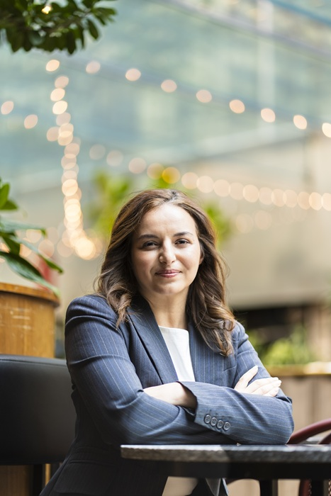

Why I see businesses differently.
Before I see an acquisition, I see someone's life's work.

Every buyer studies financial statements.
I do too.
But numbers only explain what a business has done.
They rarely explain why people chose to stay.
Before I ask about the numbers, I want to understand something less visible.
Why have your customers remained loyal?
Why have employees stayed for years?
What traditions matter?
What parts of the business would you hope never change after you leave?
Those answers tell me far more about the company than a spreadsheet ever could.
I founded Orenda Continuum Capital around one conviction: exceptional companies deserve a successor who understands what they represent before deciding what they are worth.
The strongest companies are rarely built on the perfect strategy. They are built because a founder showed up every day, kept their word, earned trust over time, and surrounded themselves with people who cared as much as they did.
That is what I look for first. Because before I see an acquisition, I see someone's life's work. And the first thing I want to understand is not the number. It is what you would never want to see disappear.
Every company has assets, financial statements, opportunities. But the companies that leave a mark always have something far harder to measure.
A culture. Relationships built on trust. Employees who stayed because they believed in the people leading them. Customers who remained loyal because promises were kept. None of it appears on a balance sheet. Yet it usually explains why the business succeeded in the first place.
So when I meet a founder, of course I want to understand the numbers. But before we ever discuss EBITDA or growth, I want to understand something else.
What are you most proud of? What would you never want to see disappear?
Protecting what already makes a company exceptional is usually the best place to begin building its future.

Orenda Continuum Capital exists to acquire and personally lead one exceptional company, for the long term.
I am not building a portfolio to resell. I am looking for one business whose future I can dedicate myself to for many years. My commitment is to earn the trust of your people, keep serving your customers, and build on the foundation you already created.
Growth matters. Innovation matters. But neither should ever come at the expense of the identity that made the business what it is.
I want to grow a company without losing its soul.
What happens after we meet? Every business is different, but every conversation starts the same way.
I listen.
I want to understand your business, your people, your goals, and what a successful transition looks like from your perspective.
If there is a fit, we continue exploring the opportunity together, with complete transparency and at a pace that respects both your business and your team.
If there isn't, our conversation remains confidential, and you leave with another perspective — not a sales pitch.
Selling your business should never feel like walking away overnight. The best transitions happen gradually. Knowledge is transferred, relationships are preserved, employees gain confidence, customers feel continuity.
If we move forward together, that transition happens at your pace, with transparency, and with the time it takes to protect everything you worked so hard to build. In most cases, that transition takes between 3 and 12 months, allowing us to transfer relationships, knowledge, and responsibilities thoughtfully.
You will not go through it alone. We go through it together.